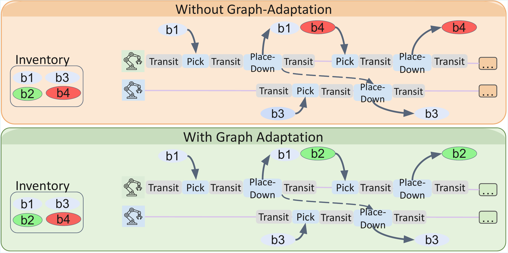

arXiv:2603.12649
Autonomous Integration and Improvement of Robotic Assembly using Skill Graph Representations
 Carnegie Mellon University
Carnegie Mellon University
* Equal contribution
Abstract
Robotic assembly is difficult to deploy because every new product, workspace, or robot setup usually requires substantial manual engineering. Engineers must translate a high-level task into executable robot skills, tune the execution stack, monitor failures, and then improve the system by hand. This work proposes Skill Graph representations as a unifying structure for making that process more automatic.
A Skill Graph organizes robot capabilities as reusable skills that connect semantic task descriptions with executable robot policies, preconditions, postconditions, and evaluators. The same representation supports task specification, planning, execution, data logging, failure diagnosis, and closed-loop skill improvement. We demonstrate the framework on bimanual LEGO assembly, where human demonstrations and user specifications are converted into robot-executable plans and improved through execution data.
What this enables
- A shared representation for task specification, skill composition, planning, execution, and evaluation.
- A practical assembly pipeline that moves from human demonstration or user input to executable bimanual robot behavior.
- A data-driven improvement loop where logs from real execution are reused to build evaluators, detect failures, and improve future runs.
Framework Overview
The framework is built around a simple story: start from an assembly goal, translate it into a sequence of reusable skills, execute those skills on the robot system, and use the execution data to improve the next run. The Skill Graph is the structure that keeps these stages connected.

From task intent to robot execution
The input to the system can be a human demonstration or a direct user specification. In both cases, the goal is converted into a structured assembly sequence. The Skill Graph then provides the vocabulary for deciding what each step means and how it can be executed by the available robots.
From robot execution to system improvement
Once the robot executes a plan, the framework does not discard the experience. It records trajectories, forces, camera observations, and skill outcomes. These data make it possible to detect failures, add new checks, and improve how future plans are selected and executed.
In short, the framework turns assembly into a loop: specify the task, compose executable skills, execute with the robot system, and improve from the data.
Demos
Demo 1 — Human Demonstration to Robot Execution
A raw human assembly video is passed through the VLM-based task specification pipeline: the video is temporally downsampled, visually cropped, and prompted with Skill Graph semantics to produce a structured JSON task sequence — with zero manual annotation. The robot then executes the extracted sequence autonomously, grounding each step through the Skill Graph.
Demo 2 — Long-Horizon LEGO Assembly
The system is evaluated on four LEGO brick structures spanning 14 to 36 bricks, requiring up to dozens of sequential pick, place, support, and handover actions across two robot arms. Below is the full robot execution of the Faucet structure (14 bricks).


Demo 3 — Automatic Failure Recovery
When a pick or place operation fails mid-assembly, the in-hand camera evaluator detects the failure via post-condition checking and triggers an automatic retry — without restarting the full task. This 10× speed-compressed clip shows the system recovering from a grasp failure during Faucet assembly.
Demo 4 — Skill Improvement After Deployment
After integrating vision-based post-condition evaluators and failure-probability-aware replanning, the system achieves 100% success on all four evaluated designs and reaches the maximum survival length (complete assembly without restarting).
| Method | Design | Success Rate | Survival Length |
|---|---|---|---|
| Before skill improvement | Faucet | 1/5 | 9.2 |
| Fish | 0/5 | 7.8 | |
| Vessel | 1/3 | 33.7 | |
| Guitar | 1/1 | 24 | |
| After skill improvement | Faucet | 1/1 | 14 |
| Fish | 1/1 | 29 | |
| Vessel | 1/1 | 36 | |
| Guitar | 1/1 | 24 |
Success Rate: trials in which the system fully built the design without restarting. Survival Length: average bricks assembled before a restart was required.
Pipeline
1. Task Specification
The user supplies an assembly task either directly as a structured sequence or via a
human demonstration video. The video pipeline runs four stages:
(1) temporal downsampling to 10 Hz with audio/visual noise removal;
(2) relative spatial reasoning prompts using a one-shot multimodal example
(image–JSON pair) to calibrate visual-cue-to-action mappings;
(3) scene initialization from initial frames to estimate inventory and
workspace state z0;
(4) schema-constrained generation that restricts VLM outputs to valid
meta-skill types (PickPlace, PickPlacewSupport) and object
categories, producing a structured JSON task sequence 𝒜.

2. Semantic Planning over the Skill Graph
The planner uses best-first search to ground each assembly step ai into a meta-skill assignment (robot arm, object, skill). At each node, the planner enumerates feasible meta-skills by checking pre-conditions: stability (via the LEGO-specific estimator), kinematic feasibility (RRT-Connect), and collision constraints. The evaluator ℰ assigns cost using simulated execution time. The search terminates when a fully feasible grounded sequence is found.
3. Asynchronous Bimanual Execution
The grounded plan is executed on two Yaskawa GP4 industrial robots equipped with force-torque sensors. APEX-MR converts the sequential skill plan into a Temporal Plan Graph (TPG) — a directed acyclic graph where nodes are robot actions and edges encode precedence constraints. Conflict-free actions execute concurrently, reducing overall task time while preserving safety.

Per-skill trajectory visualizations
Each atomic skill produces a distinct motion and force signature. The six unique skills are shown below — trajectories are recorded at execution time and stored as structured logs for downstream evaluation and improvement.


4. Data Collection and Performance Improvement
Each execution produces structured logs pairing skill labels with robot state trajectories, force readings, and camera observations. These logs drive two closed-loop improvement mechanisms.
Vision-based skill evaluators
New perception skills are crafted from planning and execution data. An Eye-in-Finger (EiF) camera verifies pick/place post-conditions via a DINOv2 + SVM binary classifier — detecting whether a brick is securely grasped or correctly released. Side-view cameras detect structural anomalies by comparing the live partially assembled structure against a Gazebo simulation reference using geometric discrepancy measures. Together these evaluators catch manipulation failures immediately, preventing error propagation into later assembly steps.

Failure-probability-aware planning
Empirical failure probabilities estimated from execution logs are fed back into the Skill Graph cost tensor. The planner then autonomously reallocates tasks — for example, selecting a lower-risk redundant brick instead of a repeatedly failing one — without any manual reconfiguration. This closes the loop between deployment experience and future task planning.

Citation
@article{yu2026autonomous,
title = {Autonomous Integration and Improvement of Robotic Assembly using Skill Graph Representations},
author = {Yu, Peiqi and Huang, Philip and Chawla, Chaitanya and Shi, Guanya and Li, Jiaoyang and Liu, Changliu},
journal = {arXiv preprint arXiv:2603.12649},
year = {2026}
}